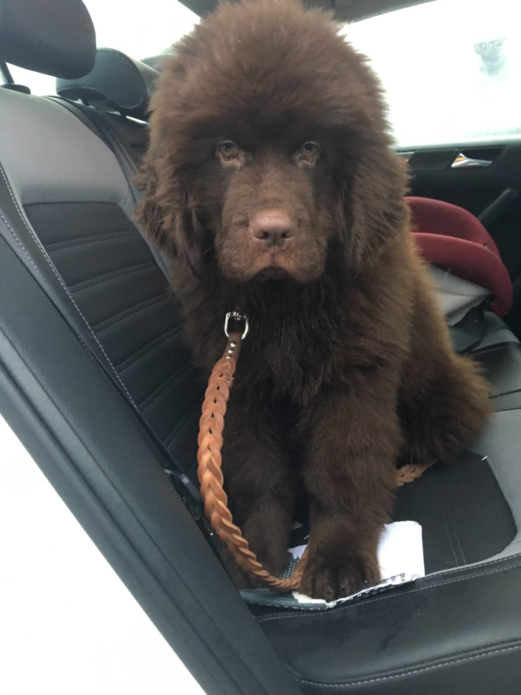
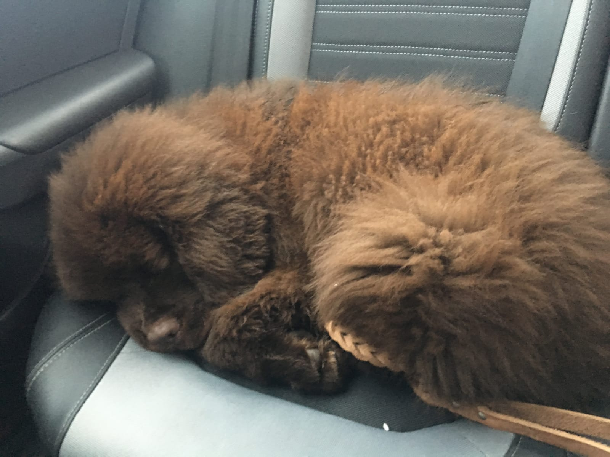
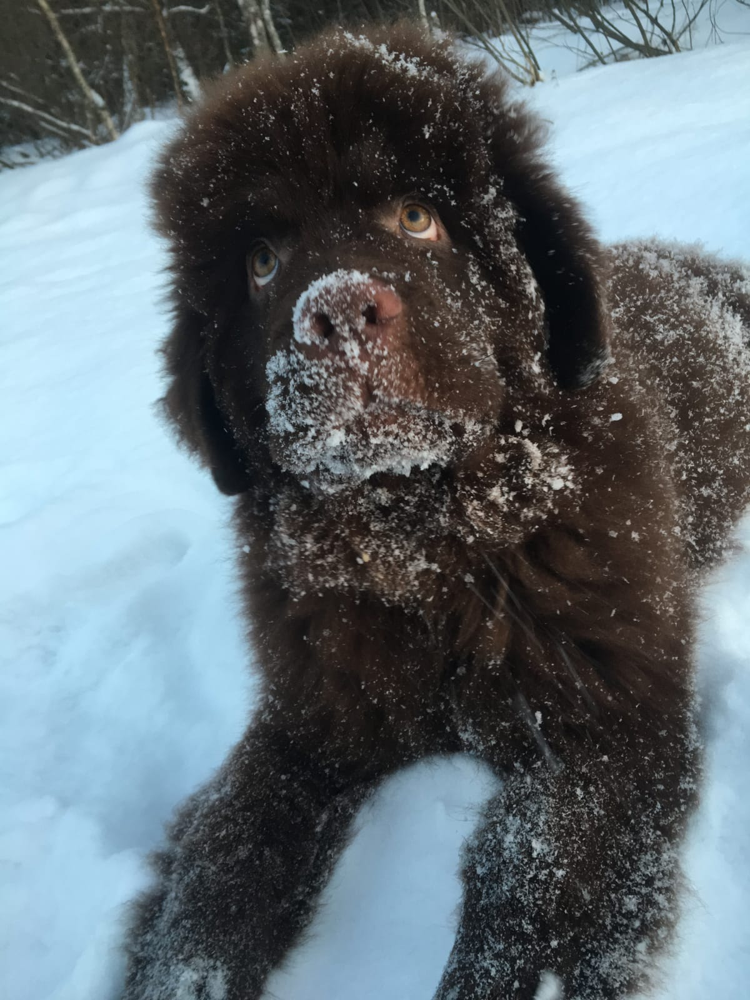
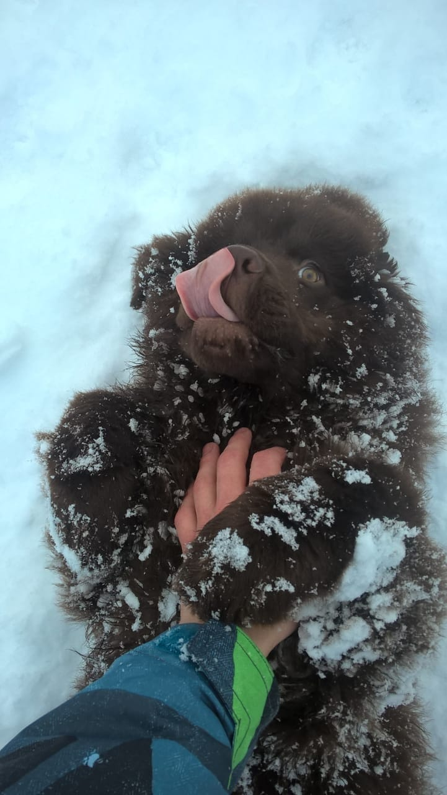
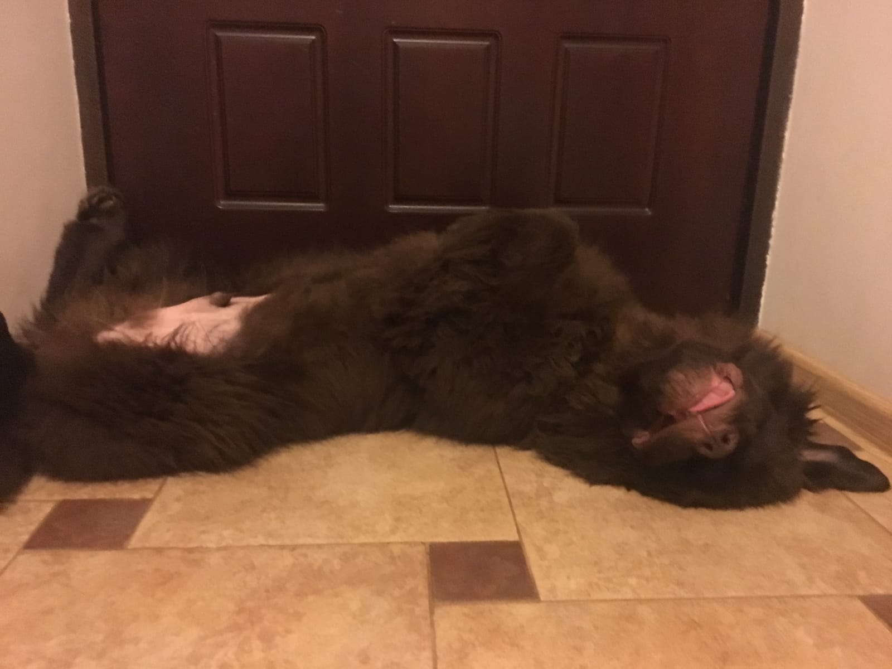

Зима. Предновогодняя суета. Поиск подарков родным и близким.
А что же подарить себе? Конечно же большую маленькую собачку...
Так в нашей семье повился наш собственный Клаус!
 
Все считали, что он будет хорошим охранником,
но он сразу всем дал понять что интересы расходятся...
Клаус объяснил, что он любит:
 

Сразу стало понятно, что у малыша аллергия на любое мясо!
Пришлось поискать монобелковый корм на рыбке и мы его нашли тут:
Ммммм! Рыбка!